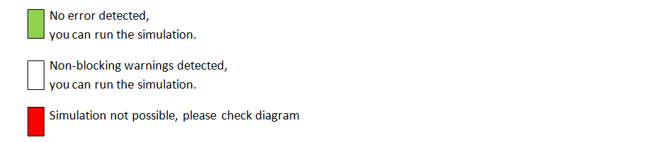

Home
| Revision 2 | september 2024 |
| Software | WRSimulator |
| Version | 1.5 on WinRelay Studio 2.5.0 (2.5c) |
| Author | Frédéric POPEK |
| Editor | INGEREA |
Simulator objectives
The aim of the simulator is to enable users to simulate electrical, electrotechnical and pneumatic circuits for educational purposes and for pre-project presentation.
In particular, the simulator can be used to simulate automated production system-type installations using a virtual or physical PLC connected via MODBUS/TCP-IP, coupled with an animated operating section.
The simulator incorporates a mixed analog/digital simulation model, enabling simultaneous simulation of: - standard electrical/electrotechnical circuits, - pneumatic circuits, - complex objects (speed controllers, safety relays, etc.) - programmable logic controllers, - simple operating parts.
First steps
Open an example
- Open an example from WinRelais File>Open wr-schematic/Simulator_Demos/.
- A quick access to the Simulator_Demos folder is built into the installation. This allows you to launch WinRelais directly with the selected example.
Launch simulator
Click on the icon:

Simulator controls
- Simulator checks give three levels of warning: 